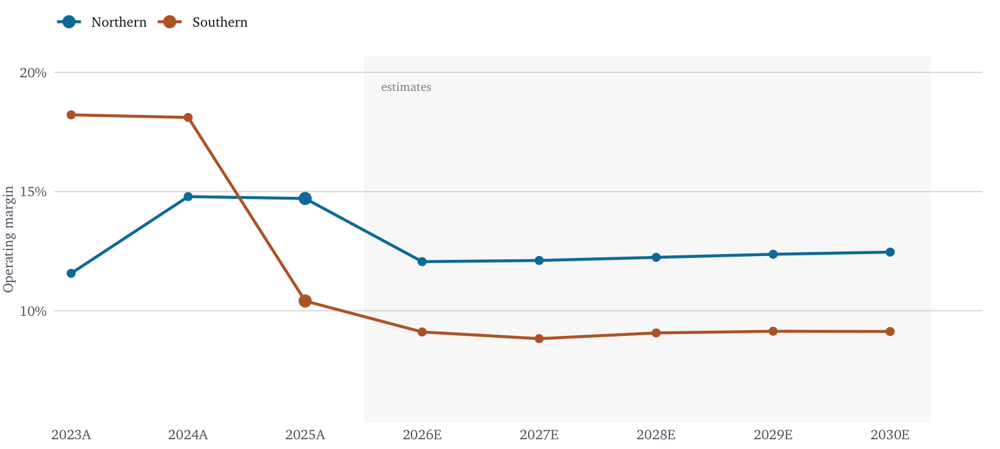

Why North Carolina’s Migration Boom Isn’t Making Homebuilders Money
Economics
Finance
Housing
A three-statement model, a DCF and a comparables analysis, built to test whether the biggest interstate migration flow in the country actually reaches a builder’s margin. It doesn’t, and not because of interest rates but supply elasticity.
UPDATE (9/11) I noticed today that MHO’s price had fallen significantly from when I first posted this, and I found a couple minor errors in the model which had lowered the target, so I updated the call to Neutral from Underweight. I feel somewhat vindicated for the original rating, though the current movement may just be short-term noise.
I just moved to North Carolina for my graduate education. I’m not alone: in the year to July 2025 North Carolina gained a net 84,000 residents from other states, more than any other state. Given my previous work in housing, I was curious whether this presented an opportunity for homebuilders, and investors, to capitalize on new demand. I identified M/I Homes as a mid-cap builder with a large enough presence in the region for the influx of new arrivals to move the needle.
The call
I am initiating on M/I Homes at Neutral with a $160 price target, +14% against the current price and slightly below the street. I set ratings against the cost of equity rather than against zero because a stock expected to return less than the return its risk demands is one to hold below benchmark weight, whatever the sign of the number. On that basis +14% against a 12.0% cost of equity is a paltry +2.2 points of alpha. MHO pays no dividend, so that’s all you get. Hardly exciting, and not riskless either. My bull case, at $199, requires two independent things to go right at once, rates falling and Sunbelt supply clearing, whereas the bear, at $100 needs only one thing to keep happening.
M/I Homes is a well-run company: net cash, retiring roughly 5% of its shares a year, and at 1.10× book not obviously expensive. The problem is what it now earns on that book. Return on equity has fallen from 19.2% in 2024 to 9.3% on trailing numbers. At a 12.0% cost of equity, today’s multiple already pays for a normalized return of about 12.9%. My base case reaches 9.8% by 2028, and only by assuming a competitive recovery I can’t verify.
The more interesting finding is underneath the rating, and it’s the opposite of what I expected. In 2025 the Southern segment, Raleigh and Charlotte alongside Florida and Texas, saw its operating margin fall from 18.1% to 10.4%. The Northern segment, the Midwest business the market treats as a legacy drag, held at 14.7%. The growth region stopped carrying the profit.
Demand is real; margin is the problem
That net inflow is real, but it is slowing. 2025 was about 81% of the 2020–21 peak, and more importantly, arrivals are not clearing at the price builders want. House price indices for Raleigh and Charlotte rose just 1.1% and 1.5% over the year to Q2 2026, against 3.8% inflation: roughly 2.6% and 2.3% declines in real terms, in the state everyone is moving to.
This wasn’t a rate shock. The 30-year fixed mortgage fell from 6.72% in 2024 to 6.59% in 2025 while the Southern margin was collapsing. Southern cost per home barely moved. Essentially the whole margin decline was price handed back at the closing table.
Splitting the Southern segment into price and cost settles the question. Cost per home, adjusted for the $41m of Southern inventory write-offs taken in 2025, went from $358k to $360k over two years. Average selling price fell more than $26k. There is no cost story here.
| Region | Metric | 2023A | 2024A | 2025A | 2026E | 2027E | 2028E |
|---|---|---|---|---|---|---|---|
| Southern | Net average selling price | 485.4 | 478.6 | 459.2 | 441.8 | 447.7 | 458.8 |
| Cost per home | 358.4 | 351.1 | 360.3 | 359.2 | 366.4 | 374.8 | |
| Gross profit per home | 127.0 | 127.5 | 98.9 | 82.6 | 81.3 | 84.0 | |
| Gross margin | 26.2% | 26.6% | 21.5% | 18.7% | 18.2% | 18.3% | |
| Northern | Net average selling price | 478.1 | 489.4 | 507.1 | 500.7 | 511.4 | 524.2 |
| Cost per home | 385.4 | 381.4 | 394.0 | 394.0 | 402.6 | 412.3 | |
| Gross profit per home | 92.7 | 108.0 | 113.1 | 106.7 | 108.7 | 111.9 | |
| Gross margin | 19.4% | 22.1% | 22.3% | 21.3% | 21.3% | 21.4% |
This was an important lesson for me, because I came into this project with the assumptions of the Portland, OR housing market in place. But the Southeast generally has much laxer zoning and permitting codes than the West Coast, which allows the market to quickly respond to the influx of demand with more construction, apparently even to the point of oversaturation. From a policy perspective it’s a success story, but unfortunately MHO wasn’t positioned to profit from that success.
The forecast
Revenue is built region by region, deliveries times average selling price for Northern and Southern separately, rather than off a blended growth rate, because I’m interested in regional trends. Gross margin is what is left after an incentive load reduces the realized price and a separately-driven cost per home is subtracted. Incentive load is a base rate, plus a slope against the mortgage rate above a 5.5% neutral level, plus an explicit competition premium to account for the Southern margin collapse.
The 2026 estimate is set against reported first-half results: 4,120 deliveries, $5.57 of EPS, a 459k average price. My full year of $11.98 implies 4,432 second-half deliveries, 7.6% above the first half, against an actual 6.3% step in 2025. On earnings the comparison is less flattering, implying $6.41 of second-half EPS against $5.57 in the first, whereas 2025’s second half fell 24% sequentially. What makes me comfortable is the year-over-year line rather than the sequential one: $6.41 in 2H 2026 is essentially flat against the $6.34 actually earned in 2H 2025.
| 0.5pp | 1.7pp | 3.0pp | 4.2pp | 5.5pp | |
|---|---|---|---|---|---|
| 5.50% | 17.13 | 16.29 | 15.39 | 14.53 | 13.61 |
| 6.00% | 16.46 | 15.61 | 14.72 | 13.85 | 12.94 |
| 6.35% | 15.99 | 15.14 | 14.25 | 13.38 | 12.47 |
| 6.75% | 15.45 | 14.60 | 13.71 | 12.85 | 11.93 |
| 7.25% | 14.78 | 13.93 | 13.04 | 12.17 | 11.26 |
Read that grid across, not down. Moving the mortgage rate over its whole range shifts 2027 EPS by about $2.35. Moving the competition premium over its range shifts it by $3.52. The competitive variable matters more than the Fed, which is the opposite of how this sector is usually discussed.
Against the consensus
M/I Homes publishes no quantitative guidance; no delivery, revenue, margin or EPS target appears in either the FY2025 or the Q2 2026 release. Every forecast here is mine. Consensus is the one external check available, but it is thin. 7 analysts have published a rating in the past twelve months, 4 positive, 2 hold and 1 sell, but only one price target has been issued in the past three months, and the EPS estimates below carry a stamp of 24 June 2026. The most recent rating action is a Zacks Research downgrade on 9 September 2026.
| Metric | Mine | Consensus | Range | As of |
|---|---|---|---|---|
| 2026E revenue | $4.13bn | $4.18bn | — | 24 Jun 2026 |
| 2026E EPS | $11.98 | $12.19 | $11.43–$13.25 | 24 Jun 2026 |
| 2027E EPS | $13.15 | $14.08 | not published | 24 Jun 2026 |
| Price target | $160 | $164.25 | $155.00–$172.00 | 11 Sep 2026 |
| Rating | Neutral | Moderate Buy | — | 11 Sep 2026 |
I sit slightly below the street on both years and on the target: 2% on 2026, 7% on 2027 and 3% on the target. My 2026 number sits inside the published range. I do assume that the 2024-5 drop was a bit anomalous, so the competition premium decaying boosts the numbers, but this is partially offset by baking in the current high mortgage rates, which if anything seems a bit conservative based off current trends. I’m comfortable with a minor deviation from the conventional wisdom because seven ratings is not that many, and I feel confident about the assumptions in my model. But Neutral really isn’t a crazy hot take here.
Composition of the recovery. Of the $1.17 of 2027 EPS growth over 2026, $0.90 is extrapolation of reported trends: volume, price, cost and the buyback. The mortgage-rate path accounts for $-0.36. And $0.64 is the Southern competition premium decaying.
Valuation
I ran a DCF and a comparables analysis separately, and they disagree sharply. The DCF, at a 10.81% WACC and 2.5% terminal growth, gives $120.79 as of today, well below the market. The unadjusted peer median price-to-book of 1.46× gives about $198, significantly above it. Because the price target is a twelve-month one, Table 5 carries the DCF value rolled forward a year at the 12.0% cost of equity, or $135, and the comparables leg is likewise struck on book at roughly September 2027 rather than book today. Both legs are therefore quoted at the same future date as the target.
One caveat: 78% of the enterprise value in that DCF is terminal value. That’s high because a builder reinvests so heavily in land and work in progress that little cash reaches shareholders inside the forecast window, which pushes the weight of the answer onto the perpetual assumption. It is a reason to treat the DCF as a discipline rather than a measurement, and it is why I do not weight it higher than 60%.
The DCF is low because a builder’s earnings recovery does not reach shareholders. My base case grows NOPAT from $300m in 2026 to $400m in 2030, but land and homes under construction absorb roughly $200m a year over the same period. Growth, for a builder, consumes cash.
| Company | Price | Mkt cap $m | P/B | P/E | ROE |
|---|---|---|---|---|---|
| DHI — D.R. Horton | $137.89 | 38,570 | 1.62× | 13.12× | 12.3% |
| LEN — Lennar | $79.60 | 19,180 | 0.89× | 12.37× | 7.2% |
| PHM — PulteGroup | $117.85 | 22,170 | 1.70× | 12.06× | 14.1% |
| TOL — Toll Brothers | $134.92 | 12,430 | 1.46× | 10.81× | 13.5% |
| MTH — Meritage | $64.22 | 4,190 | 0.83× | 13.39× | 6.2% |
| MHO — M/I Homes | $140.07 | 3,540 | 1.10× | 11.78× | 9.3% |
The striking thing in that table is the dispersion. Earnings multiples sit in a pretty narrow band, 10.81× to 13.39×, while returns on equity run from 6.2% to 14.1%. So the market is paying similar earnings multiples for notably different returns on capital.
| Method | Value | vs price | Weight |
|---|---|---|---|
| Discounted cash flow, rolled forward 12 months | $135 | -4% | 60% |
| Peer median P/B on Sep-2027E book | $198 | +41% | 40% |
| Weighted price target | $160 | +14% | 100% |
There’s a $63 a share difference between the two methods, which makes me tread cautiously both with how I weight them and how much stock I put in the headline number. The DCF is grounded in what the business earns and what that leaves for shareholders once land has absorbed its share, while the comparables are grounded in what the market currently pays other builders for a dollar of book, and say nothing about whether the cash ever arrives. I weight the first more heavily for that reason.
However, it’s ultimately a judgment call, and due to the wide gap the target is more sensitive to it than I would like. At an even split it is about $166, while weighting the comparables two-to-one over the DCF reaches roughly $177. Weighting the comparables at 100% gives $198, which is a solid Buy, so an analyst who trusts peer multiples and distrusts my cash-flow forecast reaches a quite different conclusion from the same data. My objection is that most of that number is a re-rating rather than earnings. Of the $58 by which the comparables value exceeds today’s price, only about $9 comes from book value growing between now and September 2027. The remaining $49 assumes M/I Homes is awarded the peer multiple of 1.46× book instead of the 1.10× it trades on today. That is the whole bet, and I’m skeptical that a builder earning 9.8% on equity should be priced like ones earning 12% to 14%.
The bear case
The bear case isn’t so much a recession as that the competition premium is structural rather than cyclical. It could be that even the slow decay in my base case is too generous, and the discounting simply persists.
Affordability in Raleigh and Charlotte is now binding, so the marginal buyer can only be reached by moving down in price and specification. Every builder in those markets faces the same arithmetic and reaches the same conclusion at the same time. MHO controls 30,863 lots in the Southern region, 18,124 of them owned outright. Land bought for a $500k product and sold into a $440k market does not earn a 20% margin, and the $41m of Southern write-offs in 2025 may be the first installment rather than the last.
The rate backdrop doesn’t help. The 30-year fixed mortgage has risen from a 5.98% trough this year to 6.76% at 10 September, with the 30-year Treasury at 5.37%. I do not forecast rates: I hold the mortgage rate at today’s level for the whole forecast, so nothing in the target depends on a rate view. If rates ratchet higher still and Southern incentives follow, return on equity settles near 6.2%. The bull case rests on Sunbelt spec inventory clearing faster than I assume, and gets return on equity to 12.1%. I value both the same two ways as the base case, so the numbers are comparable rather than a separate judgement call.
| Scenario | 2027E EPS | 2028E ROE | P/B used | Value | vs price | Multiple taken from |
|---|---|---|---|---|---|---|
| Bull | $15.83 | 12.1% | 1.62× | $199 | +42% | D.R. Horton, which earns 12.3% |
| Base | $13.15 | 9.8% | 1.46× | $160 | +14% | the peer median |
| Bear | $9.18 | 6.2% | 0.83× | $100 | -28% | Meritage, which earns 6.2% |
What I find reassuring about this is that neither end of the range is an extrapolation into empty space. Each scenario maps onto a builder that exists today. The bear case has MHO earning 6.2% on equity, close to the 6.2% Meritage earns now, and Meritage trades at 0.83× book. The bull case has it earning 12.1%, close to D.R. Horton’s 12.3%, and D.R. Horton trades at 1.62× book. The base case sits between the two and takes the peer median rather than any single builder’s multiple. So the question is not whether these multiples are achievable in the abstract; it is which of these real companies M/I Homes comes to resemble. That is a more concrete question than a range of price targets usually implies, and it’s why I am comfortable with the spread being wide.
The bull case is modestly higher return than the bear: +42% against -28%. However, the bull rests on rates easing and Sunbelt supply clearing, whereas the bear simply needs the competition premium not to decay. The base case is a lackluster, though positive, return. MHO is not an especially attractive stock, even with the recent drop, but it’s no longer clearly overpriced. I see it as solidly Neutral.
What would change my mind, constructively: two consecutive quarters of Southern gross margin expansion with average selling price stable or rising. Negatively: further write-offs in the Southern land bank, or Southern average selling price falling below $430k.
Sources and limitations
Claude Code assisted me with gathering data, writing code and Excel. Financial statements were copied from the FY2025 Form 10-K (filed 13 February 2026); segment revenue, cost and operating income come from its Note 12. Operating detail by region comes from the Q4 earnings releases for 2023, 2024 and 2025 and the Q2 2026 release. Consolidated figures were checked against SEC XBRL company facts and match to the dollar. Rates and house price indices are from FRED; prices and trailing multiples from stockanalysis.com; ratings from marketbeat.com at the close of 11 September 2026. All forecasts are mine.
Two limitations are worth stating. MHO reports only two geographic segments, so Raleigh and Charlotte cannot be separated from Florida and Texas in public filings. “Southern” is the closest available proxy for the North Carolina question. And the financial services segment, about 11% of segment operating income, is valued inside the consolidated DCF rather than separately, which is a simplification rather than a strictly correct treatment.
Prepared as a personal analytical exercise, not investment advice. No position held.